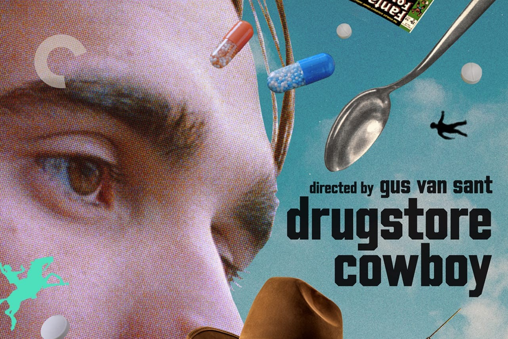
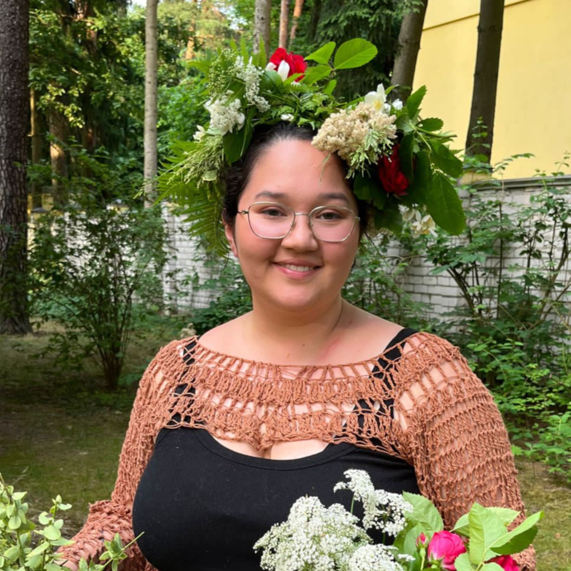

Work

Film Matters Magazine
Criterion Review
No Matter the Miles
Student Documentary

Stadiums & the Streams
Student Documentary
I'm a Georgia-based filmmaker with a love for narrative storytelling.
Going to Georgia Tech for my undergrad, I originally fancied myself an astrophysicist but found I was yearning to explore human connection.
After reminiscing on my time in theatre and love of the show Community, I pivoted to Computational Media and haven't looked back since.
Comedian Dana Carvey has said that to be a comedian you must not be able to do anything else.
Not that you can't physically; rather, there is nothing else that could fulfill you.
That is how I feel about storytelling. If I cannot help stories get told, whether that be mine or yours, then my life is incomplete.
In an ever-evolving technological landscape, it is increasingly important to practice empathy and remember the links that bind us all in this world.
Art is that wonderful reminder.
Through my love of editing and cinematography, I serve that goal and hope to raise underserved voices and contribute to the diversification of narratives. I spend much of my week in DaVinci Resolve and Adobe Creative Suite.

Film Matters Magazine
Criterion Review
No Matter the Miles
Student Documentary
Stadiums & the Streams
Student Documentary
Email: amandac23121@gmail.com
LinkedIn: Amanda Cowan
Letterboxd: @aforabandon
Ravelry: @acowan30
Instagram: @ac.far_from_home
thanks for stopping by :)
